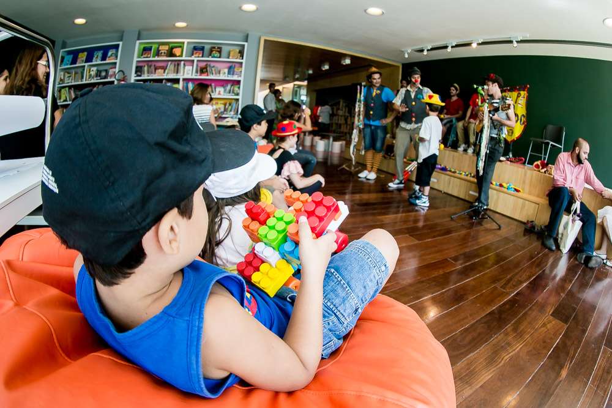

Biblioteca Parque
Conceito Parque
A rede de Bibliotecas Parque do Estado do Rio de Janeiro teve como inspiração a experiência colombiana de prover espaços de cidadania nas regiões mais vulneráveis de Medellín e de Bogotá. Áreas com uma grande participação de jovens, onde a presença da educação e da cultura poderiam apoiar o desenvolvimento de suas trajetórias de vida, gerando maiores oportunidades para impulsionar a cultura cidadã nas comunidades. No Rio, essa também foi a forma que a Secretaria de Estado de Cultura encontrou de chegar com livros, literatura, artes plásticas, cinema e teatro a diversas comunidades.Como o próprio nome diz, as BPs são como um parque: tem-se acesso a teatro, cinema, aulas de dança (em alguns casos) e até Cozinha-Escola, como na BPR C4, sempre convergindo para a exploração dos acervos e das práticas de leitura. Trata-se, portanto, de uma experiência inovadora em que o acervo não está apenas disponível, mas ganha visibilidade por meio da possibilidade de os públicos – espontâneo e escolar – interagir com os conteúdos de múltiplas formas, permitindo a promoção do conhecimento. Na visão das bibliotecas contemporâneas, novas formas de linguagem mediadas pela tecnologia funcionam como estratégia de ampliação do repertório cultural: articulam a ideia de ler o mundo com múltiplos recursos, alargando os horizontes do ser e o potencial educativo, com experimentação e criação.
Espaços
Para além de estantes de livros e mesas de estudos, as Bibliotecas Parque oferecem uma enorme variedade de espaços para que a visita ao mundo dos livros seja uma experiência única! Conheça os ambientes de lazer, oficinas, estudo, convivência e leitura de todas as unidades da Rede de Bibliotecas Parque.
O Espaço Mundo: é um setor dedicado a promover e a divulgar a produção intelectual, literária e artística de âmbito internacional. Esse recorte do acervo é voltado para estrangeiros, estudantes, interessados em geral e, ainda, para consulados, embaixadas e instituições estrangeiras, que podem contar com um espaço para disseminação de sua cultura.
Espaço expositivo:, exposições de arte e de literatura, entre outras atividades, dão vida ao coração da biblioteca em nosso Espaço Expositivo.
Biblioteca Infantil: Colorida e lúdica, a Biblioteca Infantil oferece mil possibilidades às crianças de até 10 anos: desenhar nas mesinhas, brincar, ouvir histórias, participar de oficinas e, claro, ler muito de nosso acervo de cerca de 9 mil livros! Além disso, o espaço possui objetos de mediação de leitura que estimulam o gosto das crianças pela literatura.
Café Literário: Entre um livro e outro, que tal um café e um bom papo? Localizado em nosso subsolo, o Café Literário é o lugar perfeito para uma pausa na leitura e um bate-papo com café e lanchinhos.
Carteirinha
Acima de 10 anos, todos os moradores do estado do Rio podem ter carteirinha das Bibliotecas Parque sem pagar nada. Com ela, você tem acesso gratuito ao acervo físico, ao acervo multimídia e aos laboratórios, direito a empréstimo de livros para levar para casa, pode usar os computadores e se inscrever em cursos e oficinas. Para fazê-la é muito fácil e rápido.
Biblioteca Infantil
As bibliotecas infantis das Bibliotecas Parque são espaços vivos de troca de saberes e diálogo feitos especialmente para crianças de 0 a 10 anos ficarem confortáveis e vivenciarem coisas que elas não sabem bem o que significam, mas que mudam suas vidas: cultura, conhecimento, educação literária, experiências intelectuais, artísticas e estéticas.
